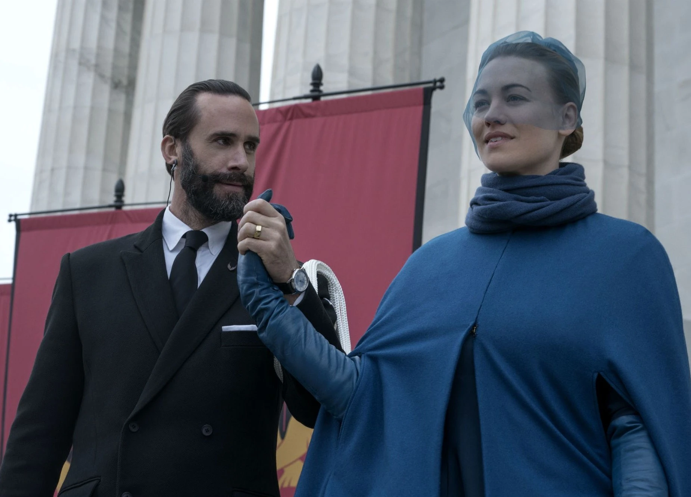
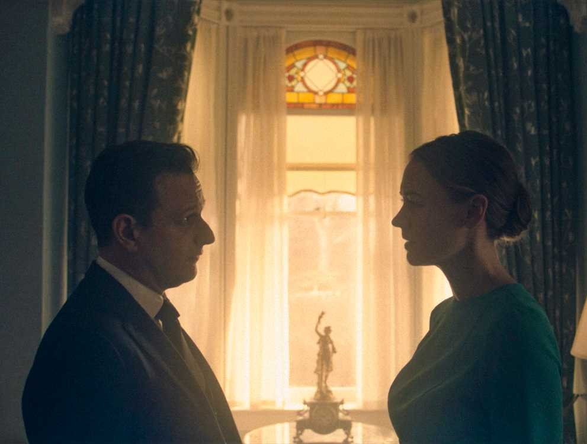

El Régimen De Gilead
Serena Joy Waterford

Serena Joy Waterford
Ideóloga, Esposa y víctima de su propio sistema
Serena Joy Waterford es una de las figuras más complejas de la historia. Es interpretada por Yvonne Strahovski.
Participó en la creación ideológica de Gilead y, una vez instaurado el régimen, quedó sometida a muchas de las restricciones que había promovido.
Ideología y fundación
Antes de Gilead, Serena era escritora y activista conservadora. En su libro «A Woman's Place» defendía un orden social en el que las mujeres debían ocupar un lugar secundario y sumiso.
Junto con Fred Waterford fue una figura instrumental en la fundación del nuevo régimen.
Como Esposa de un comandante perdió el derecho a leer, escribir y administrar dinero. Su frustración y su deseo de ser madre alimentaron la crueldad con la que trató a June, aunque también la llevaron a desafiar selectivamente las reglas, como cuando falsificó órdenes de Fred para detener a Ray Cushing.
Poder, maternidad y caída
Noah y el exilio
Serena queda embarazada de Noah y, después de la muerte de Fred a manos de June y otras criadas fugitivas, atraviesa Canadá como refugiada mientras recibe el apoyo de simpatizantes.

Ruptura con Gilead
Se casa con el Alto Comandante Gabriel Wharton, pero lo abandona la noche de bodas.
Después colabora con la resistencia para matar a los comandantes de Boston y termina en Canadá junto a Noah.
Momentos decisivos
Hitos de la caída de Serena
-
01
Fundación de Gilead
Sus ideas y su activismo contribuyen a construir el régimen que luego limita sus propios derechos.
-
02
Maternidad y viudez
Da a luz a Noah y queda viuda después de la ejecución de Fred Waterford.
-
03
Ruptura y colaboración
Abandona a Wharton, ayuda a la resistencia y finaliza como refugiada en Canadá junto a su hijo.